> Artists > Clay Witt > Images 2
Clay Witt

Images | Images 2 | Images 3 | Info | Collaboration
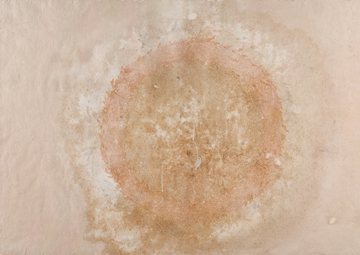

Clay Witt. Coral Eclipse, 2006.
Collaged intaglio prints, marble dust, polymer emulsion, and rust on Japanese paper, 24 1/2 x 35 1/4 inches
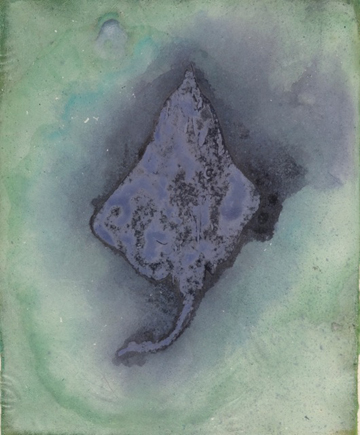
Clay Witt. Sting Ray Study, 2010.
Cut Japanese paper, malachite, lapis lazuli, polymer emulsion, and hide glue on Japanese paper, 10 x 8 1/2 inches
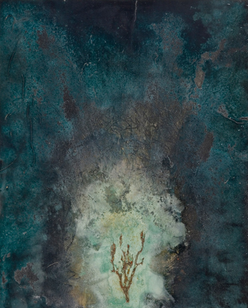
Clay Witt. Sights Unseen: Burning Bush II.
Intaglio print, malachite, gesso, ink, white gold leaf, bole, and rust on Japanese paper, 22 3/4 x 18 inches
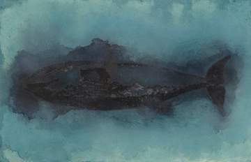
Clay Witt. Blue Whale Study, 2010.
Cut Japanese paper, lapis lazuli, ink, polymer emulsion, and hide glue on Japanese paper, 14 1/4 x 9 1/4 inches
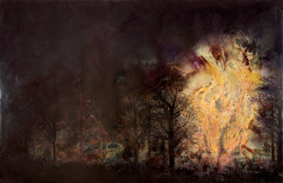
Clay Witt. The Peaceable Kingdom, 2008.
Intaglio prints, cut paper, pigment, polymer emulsion, rust and gold leaf on canvas on walnut, 48 x 72 inches
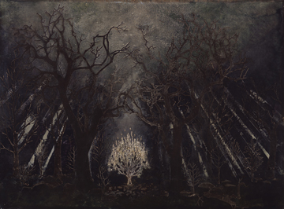
Clay Witt. Signs Unseen: The Burning Bush, 2007.
Cut paper, polymer emulsion, ink, mineral pigments, gesso, rust, and white gold leaf on canvas, mounted to panel, 36 x 48 inches
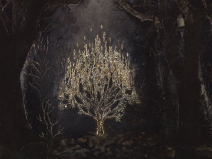
Clay Witt. Detail of Signs Unseen: The Burning Bush, 2007.
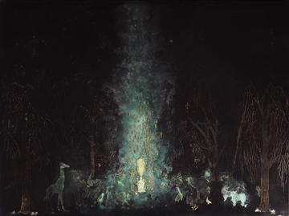
Clay Witt. Et in Arcadia Ego, 2008.
Intaglio prints, cut paper, pigment, polymer emulsion, rust, gesso, and gold leaf on canvas mounted on panel, 36 x 48 inches
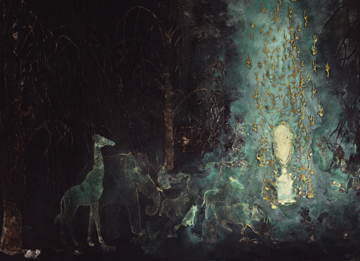
Clay Witt. Detail of Et in Arcadia Ego, 2008.
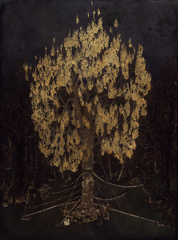
Clay Witt. Tree of Knowledge, 2007-2008.
Cut paper, pigment, polymer emulsion, rust, gesso, and gold leaf on canvas mounted to panel, 48 x 36 inches
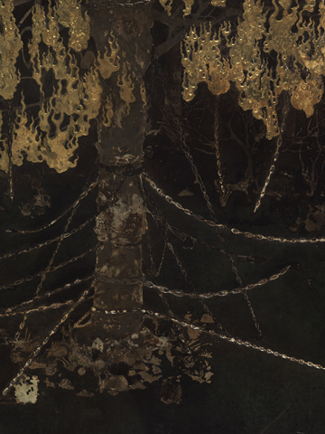
Clay Witt. Detail of Tree of Knowledge, 2007-2008.
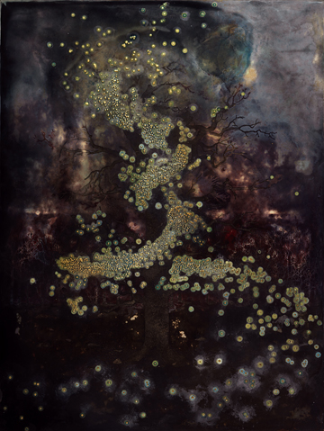
Clay Witt. Lazarus, 2007.
Cut paper, pigment, polymer emulsion, rust, gesso and gold leaf on panel, 48 x 36 inches
Images | Images 2 | Images 3 | Info | Collaboration
|